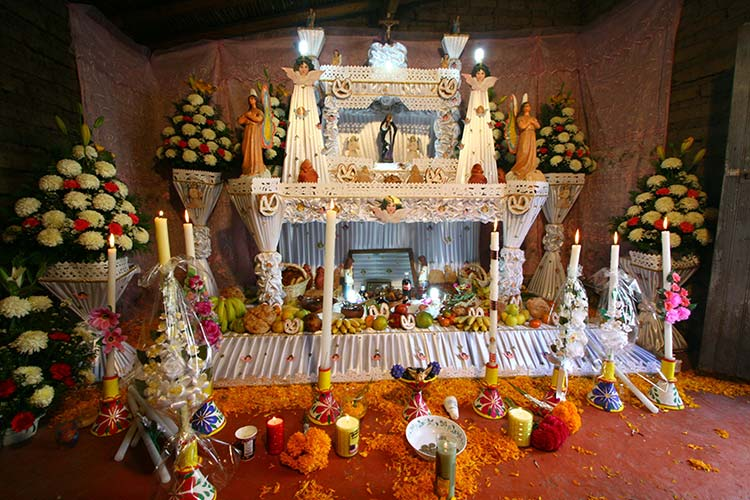

Una de las comunidades de Puebla que le da un significado muy particular a esta costumbre, es el municipuio de Huaquechula, la heredera descendiente
Cuauquechollan, es donde se originan las ofrendas munumentales de Mexico, monumentos con los que se honran a los muertos en los oficios funerarios de la catolicidad.
Estas ofrendas impactan, primeramente, por su disposicion y por su fastuosa monumentalidad, ya que alcanzan los 3 y 4 metros de alto y de ancho, para cubrir el muro de las modestas viviendas. Junto a la ofrenda se instala una mesa comunitaria con bancas de madera, a la que habran de llegar los visitantes para hacer obsequios a sus difuntos, mismos que consisten en pipian verde, mole poblano, tamales, pan de muerto y de de la region, tortillas de maiz, y si es por la noche, un buen cafe, chocolate y pan.
Estas ofrendas se instalan a manera de un altar, que antiguamente alcanzaron de 5 a 9 niveles y que significaban los circulos del inframundo indigena. La armazon estructural se reviste de una brillante tela que nunca debera ser negra, sino de color azul cielo, verde limon, rosa mexicano, solferino y blanco, diferencia esencial con los tumulos eclesiasticos en los que el mundo de la muerte siempre es obscuro.
Cada nivel de esta construccion es diseñado conforme al gusto y la tradicion de la familia del difunto. En el primer nivel, de abajo hacia arriba, se ofrenda con todos los elementos tipicos, pan de muerto, cañas, cirios, frutas, ahua, etc.
En el segundo, al centro, se instala la fotografia del fallecido con todo aquello que acostumbraba, como podia ser pulque o cerveza, algun guiso, en especial unas cartas o enclusive la ropa que mas le gustaba.
En el tercer y ultimo nivel se dedica al dios creador del cielo y de la tierra, o a la santa imagen que el difunto veneraba.
